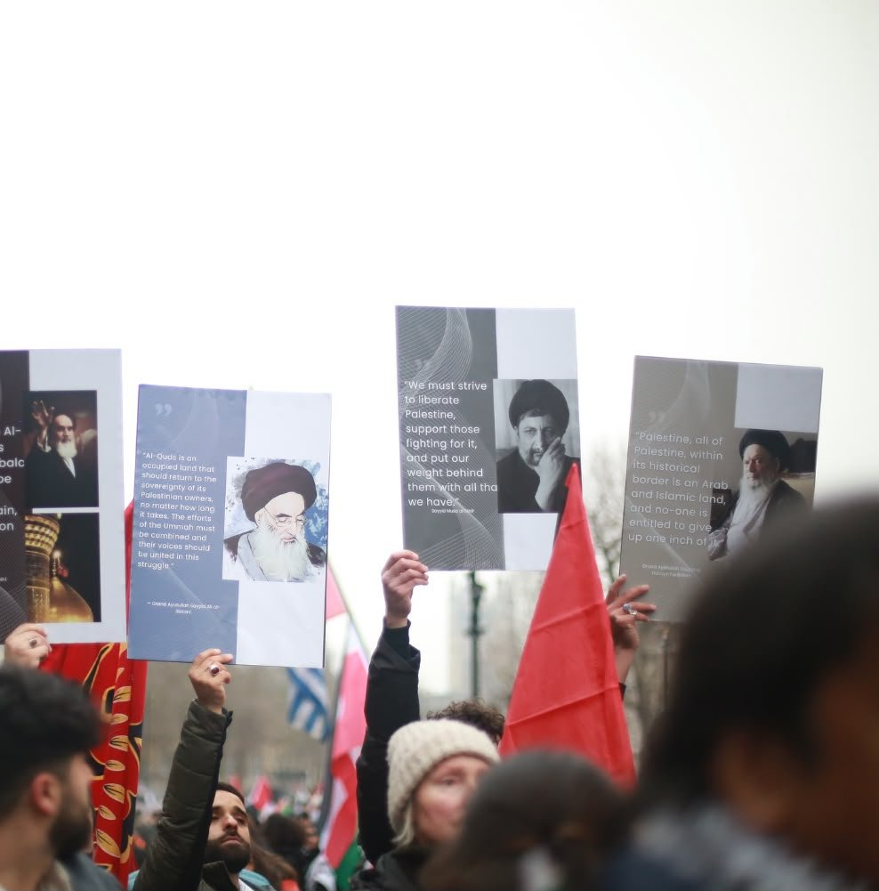
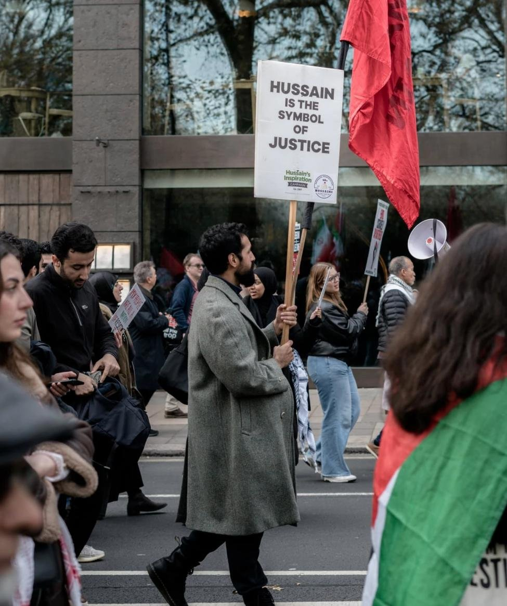
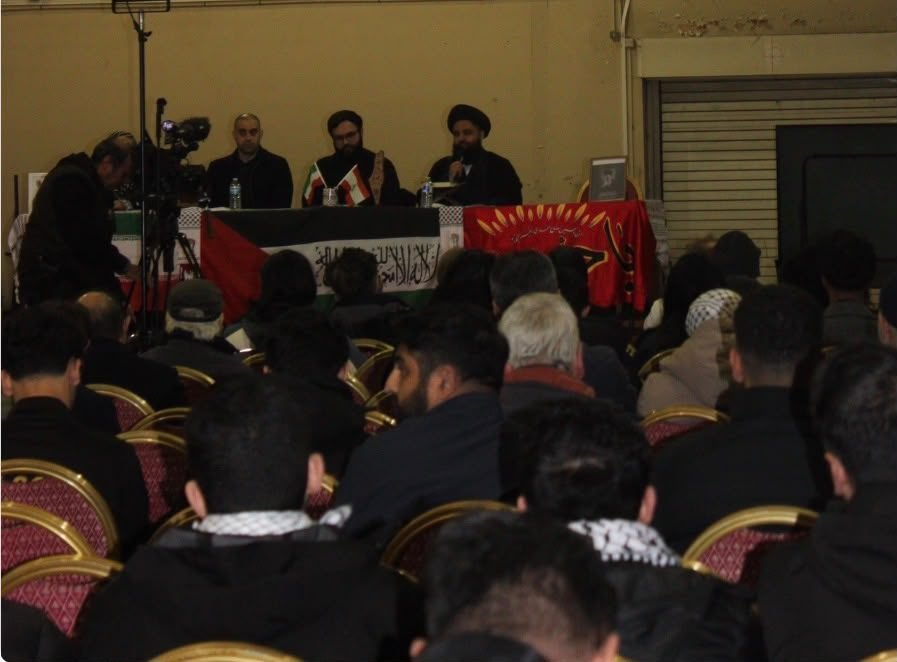

Book club and community events, charity fundraising, educational workshops — and the campaigning that ties them together.
01 — Political Campaigning
In order to promote material change, AFJ is involved in political discourse and local campaigns that align with Muslim interests. This includes upholding justice both internally and externally via foreign policy, as well as protecting freedom of speech and religious freedoms, to name a few.


02 — Social Media Campaign
Through our online presence, AFJ spreads awareness on relevant political issues that affect the Muslim community. Our research team gather and verify information to share, exposing the tools of oppression used by the Zionist lobby and the British state.
With this, we put out calls to action — often involving peaceful protests, donating to relevant initiatives, and attending educational public workshops.
03 — Collaborate
AFJ has worked with a number of different organisations who have aligned with our quest to speak the truth and challenge oppression. We've also collaborated with key figures in law, politics and religious spaces, who offer much-needed guidance.
These relationships ensure that we remain steadfast and focused on the mission and extend our reach, while keeping safe and within the law.


04 — Public Events & Workshops
AFJ engages Muslim students and the wider Muslim community by organising and facilitating events designed to encourage political discourse and spread awareness on current affairs.
These usually involve organising speeches by prominent and knowledgeable scholars, or by Muslim professionals who can give much-needed perspective on how the current political climate can have an impact on our personal lives as Muslims.
05 — ABSoc Training
AFJ hosts workshops and training sessions designed to educate the Muslim community, particularly within the ABSoc spaces on university campuses.
These workshops are designed to equip students with the necessary knowledge and skills to navigate the world and approach their work in an informed way. This includes cultivating media literacy, knowledge of activism, their rights, religious duty, and staying informed on current affairs.
